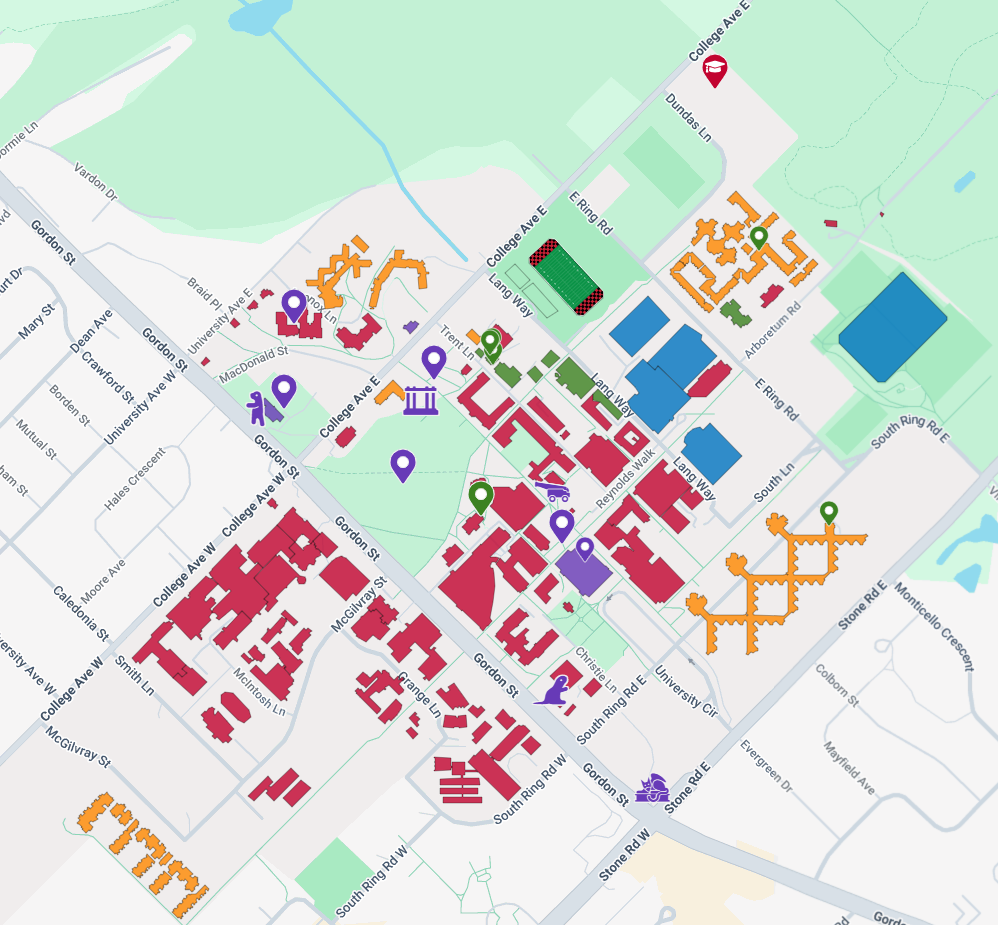

Click an empty spot to drop a pin with a title, a note, and some tags. Click an existing pin to view, edit, or delete it.

Spots worth remembering, pinned as I find them.
Click an empty spot to drop a pin with a title, a note, and some tags. Click an existing pin to view, edit, or delete it.
